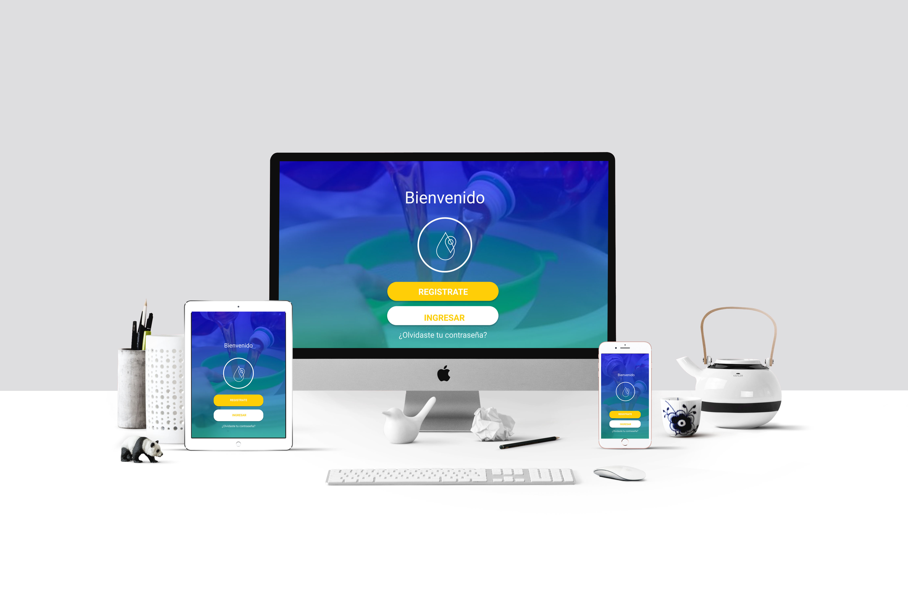
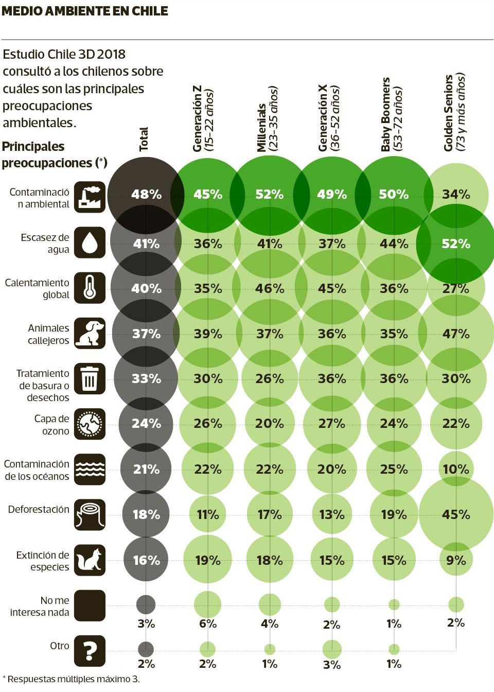

Este proyecto consistió en “Diseñar una aplicación web con visión social e implementar una API disponibles por Here.”
App web sustentable
Según un estudio de “Chile 3D 2018” de GFK Adimark en el ranking de preocupaciones de los chilenos, el “cuidado del medio ambiente” aparece en el lugar número 12, posicionándose en el segundo lugar la escasez del agua alcanza es una de las mayores preocupaciones en la población chilena, sobre esta problemática nos planteamos las siguientes interrogantes ¿cuáles son los principales contaminantes? y cómo cuidamos nuestras aguas?
El aceite de uso particular es un gran contaminante para nuestras aguas un litro de aceite usado puede llegar a contaminar 1.000 litros de agua que es equivalente al consumo anual de una persona en su domicilio. Asimismo, el aceite usado por su bajo índice de biodegradabilidad afecta gravemente a los tratamientos biológicos de las depuradoras de agua, llegando incluso a inhabilitarlos. Si se vierten a las aguas bien sea directamente o por el alcantarillado, el aceite usado tiene una gran capacidad de deterioro ambiental produce una película impermeable, que impide la adecuada oxigenación y que puede asfixiar a los seres vivos que allí habitan. Verter cinco litros de aceite usado en el mar crea una fina película de grasa de 5,000 m2 que dificulta y contamina la vida marina. En nuestro país existen sistemas de gestión de aceites usados destinados a recoger y utilizarlos para aceite de velas , combustible y jabón. Estos desechos son analizados y sometidos a un tratamiento que garantiza su idoneidad en la quema y aprovechamiento de su energía calorífica.
Nuestra propuesta está en convertir a las personas en autogestores de sus residuos particulares ayudando a crear conciencia ambiental preventiva y valorando su aporte a través de incentivos.La aplicación te permite encontrar los puntos más cercanos de reciclaje de aceite desde tu ubicación a través un mapa y generando la ruta más óptima. Al momento de realizar la entrega del residuo la empresa te dará un código de validación de tu aporte la cual debe ser ingresada en la aplicación para acumular puntos que se traducirán en descuentos o beneficios para los usuarios.